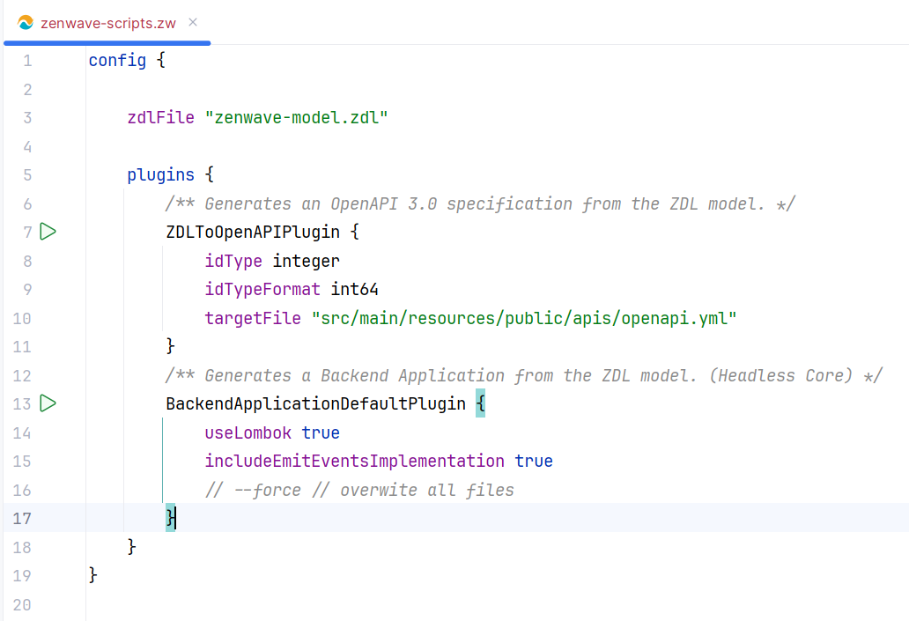

https://x.com/ghohpe/status/1513362076990803969
DDD In Practice: From an Ubiquitous Language DSL to a Complete Spring Boot Kotlin Project
- DDD In Practice: From an Ubiquitous Language DSL to a Complete Spring Boot Kotlin Project
- The Importance of Ubiquitous Language in Domain Driven Design
- ZenWave Domain Model Language: A Modeling Language that Works as Ubiquitous Language
- Business Domain Modeling with ZenWave 360º
- ZenWave 360: Quick Start for the Impatient
- Practical Case: Customers Service - From ZDL Model to Spring-Boot Project
- Generated Code Customization
- Complete Spring-Boot Project with Kotlin
The Importance of Ubiquitous Language in Domain Driven Design
Domain Driven Design is now 20 years old and remains more relevant than ever. However, due to the broad scope of its proposal, DDD is not a simple technique.
DDD is not a single technique, nor a closed recipe. It's a comprehensive design approach that spans different levels of abstraction and decision-making:
- Strategic DDD: where we identify domains and their subdomains and classify them according to their impact on business strategy: core, generic or supporting... and define different bounded contexts for these domains and how they will relate to each other through context maps.
- Tactical DDD: where we go down to the model level and talk about entities, aggregates, value objects, domain events, services and repositories.
Although Strategic DDD and Tactical DDD have different levels of abstraction, and generally interest different profiles, both are interconnected.
It's important to consider the strategic context to make good decisions at the tactical level. For example:
- It may make sense to define a clean/hexagonal architecture for a core domain, using aggregates, rich entities, domain events and a separate persistence model, since we would be modeling and discovering more complex business rules with a strong impact on business strategy.
- But it makes much less sense for a generic or supporting subdomain where simplicity and ease of maintenance are more important, and the complexity of a rich domain model not only adds no value but would harm maintainability.
However, these tactical design decisions are frequently made without considering the strategic context.
Furthermore, DDD's main proposal is to create a Common Language / Ubiquitous Language and deepen domain knowledge by discovering, identifying and making visible the language that business experts use to describe their processes, and ensuring that this language permeates the entire software development process. That it's spoken in meetings, in diagrams, in code, in tests, in documentation... and that it's the language used by business experts.
A Common Language that unites technical experts and business experts.

And although it's common to see projects that use DDD at the tactical or even strategic level, it's very rare to see a Ubiquitous Language effectively used by everyone involved throughout the entire development process... Mainly because it's difficult. Even if we invest in discovering and making visible the domain's Ubiquitous Language, this still requires manual propagation throughout the entire development process. And there are too many translation points (business experts, analysts, architects, developers, testers...) where that common language, and understanding, is lost.
Therefore, we not only need a Common Language, but also an automatic way to propagate that Common Language through code, tests and documentation.
And this is how ZenWave Domain Model Language (ZDL) emerges: To be able to think about software, talk about software, design software...
A compact and expressive way, capable of capturing technical and business concepts in a concentrated form, to describe our domain and that also works as a Ubiquitous Language format, which can be automatically transformed into executable code, API definitions, automated tests, technical documentation and business term glossaries.
In this way, domain knowledge propagates consistently throughout the entire development cycle, maintaining coherence between what business experts think and what developers implement.
ZenWave Domain Model Language: A Modeling Language that Works as Ubiquitous Language
ZenWave Domain Model Language (ZDL) is a modeling language that allows describing the content of backend services based on DDD principles and API-First for Event-Driven Architectures.
ZDL is a compact, readable, and expressive language. It also works well as a Ubiquitous Language format, and thanks to the set of ZenWave SDK Plugins, it can be converted into different software artifacts and documentation, thus propagating the common language throughout the entire development process.
Initially inspired by JHipster Domain Language (JDL) and borrowing its syntax, ZDL extends JDL beyond the definition of entities and their relationships for CRUD applications. It adds support for defining services, commands, and domain events, as well as integration with API-First specifications like OpenAPI, AsyncAPI, and AVRO.
ZDL is especially designed to capture the discoveries from a design-level Event Storming session, for a Bounded Context, as the first step to bring the language of business experts to technical documentation and source code.

In this GitHub repository you can find different examples of ZDL models, both for microservices and modular monoliths, such as this example: customer-address-jpa.zdl
Business Domain Modeling with ZenWave 360º
A good model is one that allows accommodating changes in the direction and perspective of business experts.
ZenWave 360º Business Domain Modeling is sustained by three pillars:
- Understanding the Mental Model of Business Experts.
- Using the ZDL Modeling Language to create a Ubiquitous Language that reflects the mental model of Business Experts.
- Using ZenWave SDK to convert the ZDL Model into different Software Artifacts accelerating the development process.

Understanding the Mental Model of Business Experts
Domain Driven Design emphasizes the importance of understanding the business domain to create effective software.
If we don't correctly capture the mental model of business experts, no amount of Clean Code, Clean Architecture, Hexagonal Architecture, etc... will help create maintainable and quality software.
Event-Storming: is an excellent method for capturing the mental model of business experts and understanding business processes, due to its low technological barrier to entry and because it's perfect for modeling Event-Driven Architectures.

The ZDL language allows documenting the Mental Model of business experts in a structured way, following DDD principles and Event-Driven Architectures. It allows mapping the discoveries from an Event-Storming session, retaining the language of business experts.
As a technical expert, you can use this ZDL Modeling Language to communicate within your team and narrate the story expressed by the model back to domain experts in their own language.
Converting Ubiquitous Language into Different Software Artifacts with ZenWave SDK
The best way to validate a conceptual model is to implement it.
ZenWave SDK allows accelerating the development process, converting your Domain Models into Software and functional Tests. Working software is the best way to evaluate the validity of a conceptual model. It enables early feedback to all development team members, which is crucial for iterative model refinement.

This also enables the propagation of the Ubiquitous Language captured in the ZDL to code, APIs, tests, documentation, and diagrams... automatically.
In the following sections, we'll see how we can model a simple domain and convert it into a complete Spring-Boot project with Kotlin.
ZenWave 360: Quick Start for the Impatient
This section is for the most impatient. If you want to test ZenWave 360's capabilities end-to-end and generate a complete Spring Boot project from a ZDL model, here's a concise and direct step-by-step guide. This section is designed for users who prefer immediate actions without going into extensive details at the beginning. In the following sections, we'll see in more detail how to model a domain with ZenWave 360.
-
Clone the base project: Download the base project. Alternatively, you can create a Maven project from https://start.spring.io/, although you'll need to manually configure the OpenAPI Maven Generator and the ZenWave SDK Maven Plugin for AsyncAPI. Any single-module Spring-Boot Maven project will be compatible, as ZenWave only generates business code.
-
Install the necessary tools: Follow the instructions in Getting Started to install ZenWave SDK CLI and the ZenWave Domain Model Editor for ZDL for IntelliJ.
-
Execute the plugins: In IntelliJ, open the
zenwave-scripts.zwfile and execute each plugin individually. Use the greenPlaybutton that appears in the left margin next to each plugin. -
Plugins that will be executed: By following these steps, you'll be executing the following plugins:
ZDLToOpenAPIPlugin: Generates an OpenAPI definition from the ZDL model.ZDLToAsyncAPIPlugin: Generates an AsyncAPI v3 definition from the ZDL model.BackendApplicationDefaultPlugin: Generates the Spring Boot project source code. This is the core only, without controllers or adapters.OpenAPIControllersPlugin: Generates web controllers to expose the core through a REST API.SpringWebTestClientPlugin: Generates integration tests for web controllers.OpenAPIKaratePlugin: Generates acceptance tests based on KarateDSL for REST APIs.

This will generate a complete and functional Spring-Boot project, although there are certain sections that will require your review and manual implementation:
- MapStruct Mappers: Although the generated mappers compile correctly, it's important to verify that they map data appropriately, especially in complex or non-trivial conversions.
- Automated Tests: Both unit and integration tests are generated as basic skeletons. You'll need to complete the test logic and provide realistic input data.
- Service Implementation: For methods that go beyond basic CRUD operations, you'll need to review and adjust the implementation that ZenWave has inferred according to your specific business logic.
Key advantage: ZenWave generates only clean business code, without exotic dependencies. It uses exclusively standard technologies like Spring-Boot, Spring-Cloud, MapStruct, and Lombok (optional), ensuring compatibility with any existing project starter or archetype.
Following these steps, you'll have a complete working project in minutes: API-First with OpenAPI and AsyncAPI, Clean/Hexagonal or layered architecture, unit tests with in-memory implementations and integration tests with SpringBootTest, Spring WebTestClient, and KarateDSL. Ready to experiment with all ZenWave 360 capabilities.
In the following sections, we'll explore in detail how to model a domain using ZDL.
Practical Case: Customers Service - From ZDL Model to Spring-Boot Project
Now that you've experienced ZenWave 360's capabilities, let's model step by step a simple service for managing a "Customer Master".
From a strategic point of view, this is a generic or supporting subdomain: it doesn't provide direct competitive value to the company, but it's crucial for the operation of other more critical subdomains.
This customer master service will manage:
- Creation, updating, and deletion of customers
- Notification of state changes to other interested services via message queues
Although it's a generic subdomain, it's essential to model it using the language of the business experts who will interact with it. For example, if experts refer to customers as "Customer" instead of "Client" or "Prospect", we must adopt that exact term in the model to avoid ambiguities and ensure the ubiquitous language permeates the entire system.
In this practical case, based on the mental model of the experts, we'll use "Customer" as the main entity with its key attributes.
Creating a ZDL for our Customers Service
We'll start by creating a file with .zdl extension for our model. ZDL files begin with a global documentation section and a configuration section where we can define global properties that will be used by all ZenWave SDK plugins.
These two sections are optional, but if they exist, they must go together at the beginning of the ZDL file.
/*** Customer Master Service.** This model describes a customer master service that manages customer data...** Use zenwave-scripts.zw to generate your code from this model definition.*/config {title "Customer Master Service"basePackage "io.zenwave360.example"persistence jpadatabaseType postgresql// ...}
Modeling Domain Commands and Events
There are multiple approaches to start modeling a service: from the internal model, input commands, REST API, or published events...
In this case, we'll start by modeling the input commands and domain events that are part of this bounded context, that is, its public interface.
We group commands in a service and document through which APIs the service exposes its commands and events.
In ZDL, each service always manages one or several aggregates. Since we haven't created any aggregate yet, we'll simply create an empty Customer entity and use it as the aggregate root.
We create:
- A
CustomerServiceservice to manage customers (theCustomeraggregate) - An input command
enrollCustomerthat:- Receives input data from a
CustomerInput - Returns the newly created aggregate
Customer - Emits a domain event
CustomerEnrolled
- Receives input data from a
NOTE: Commands can also receive the aggregate entity itself as an input parameter, in this case Customer.
@aggregateentity Customer { }/** ReadModel: contains the information needed to create a customer */input CustomerInput {/** Customer name */name String required maxlength(254)/** Customer familiar name is how we refer to the customer in a friendly way */familiarName String required maxlength(254)email String required maxlength(254) pattern(/^[a-zA-Z0-9._%+-]+@[a-zA-Z0-9.-]+\.[a-zA-Z]{2,4}$/)}service CustomerService for (Customer) {/** Enroll Customer Command: creates a new customer */enrollCustomer(CustomerInput) Customer withEvents CustomerEnrolled}event CustomerEnrolled {customerId Stringcustomer Customer}
Connecting the Service with the Outside via APIs
Now we're going to document how our CustomerService will communicate with the outside world through REST and asynchronous APIs.
For this, we'll use certain annotations (decorators) to document
@rest("/customers")service CustomerService for (Customer) {@postenrollCustomer(CustomerInput) Customer withEvents CustomerEnrolled}@asyncapi({ channel: "CustomerEvents", topic: "customer.events" })event CustomerEnrolled {//...}
These annotations serve not only to document how our service communicates with the outside, but also thanks to ZenWave SDK plugins (ZDLToOpenAPIPlugin and ZDLToAsyncAPIPlugin), they allow us to generate a preliminary version of said APIs.
The ZDL format has evolved as an IDL language to define both OpenAPI and AsyncAPI type APIs almost completely:
Converting ZDL to OpenAPI
The syntax inherited from JHipster JDL allows defining request and response payloads in a compact way:
- Field names: Using the domain's ubiquitous language
- Data types: String, Integer, Long, Boolean, etc.
- Validations: required, maxlength, pattern, min, max, etc.
- Relationships and nested entities: For complex data structures
For defining different endpoints, we use the following annotations:
Service configuration:
@rest("/<path>")- Defines the service's base path
HTTP methods:
@post,@get,@put,@delete,@patch- Specify the HTTP method for each command
Advanced endpoint configuration:
@put("/{customerId}")- Defines routes with path parameters@post({ path: "/search", params: {search: String}, status: 200 })- Includes query params and their types
- Custom response codes: POST by default generates status
201, in the case of a search200is more appropriate
@paginated- Indicates that the endpoint returns paginated results@filedownload("documentData.data")- File download endpoint (binary), wheredocumentData.datais the field containing the file data@fileupload("myfile")- Multipart endpoint withmyfilefield of binary type for file upload
The following example shows a complete service with CRUD operations:
@rest("/customers")service CustomerService for (Customer) {@postcreateCustomer(Customer) Customer withEvents CustomerEvent@get("/{id}")getCustomer(id) Customer?@put("/{id}")updateCustomer(id, Customer) Customer? withEvents CustomerEvent@delete("/{id}")deleteCustomer(id) withEvents CustomerEvent@post({ path: "/search", status: 200 }) @paginatedsearchCustomers(CustomerSearchCriteria) Customer[]}
When using the ZDLToOpenAPIPlugin, the following
ZDL Model
/*** Sample ZenWave Model Definition.* Use zenwave-scripts.zdl to generate your code from this model definition.*/config {title "ZenWave Customer JPA Example"basePackage "io.zenwave360.example"persistence jpadatabaseType postgresql// these should match the values of openapi-generator-maven-plugin// used by the OpenAPIControllersPlugin and SpringWebTestClientPluginopenApiApiPackage "{{basePackage}}.adapters.web"openApiModelPackage "{{basePackage}}.adapters.web.model"openApiModelNameSuffix DTO}/*** Customer entity*/@aggregate@auditing // adds auditing fields to the entityentity Customer {name String required maxlength(254) /** Customer name */email String required maxlength(254)/** Customer Addresses can be stored in a JSON column in the database. */@json addresses Address[] minlength(1) maxlength(5) {street String required maxlength(254)city String required maxlength(254)}}@auditingentity PaymentMethod {type PaymentMethodType requiredcardNumber String required}enum PaymentMethodType { VISA(1), MASTERCARD(2) }relationship OneToMany {@eagerCustomer{paymentMethods required maxlength(3)} to PaymentMethod{customer required}}// you can create 'inputs' as dtos for your service methods, or use entities directlyinput CustomerSearchCriteria {name Stringemail Stringcity Stringstate String}@rest("/customers")service CustomerService for (Customer) {@postcreateCustomer(Customer) Customer withEvents CustomerEvent@get("/{id}")getCustomer(id) Customer?@put("/{id}")updateCustomer(id, Customer) Customer? withEvents CustomerEvent@delete("/{id}")deleteCustomer(id) withEvents CustomerDeletedEvent@post("/search")@paginatedsearchCustomers(CustomerSearchCriteria) Customer[]}@copy(Customer)@asyncapi({ channel: "CustomersChannel", topic: "customers" })event CustomerEvent {id Long requiredversion Integer// all fields from Customer are copied here, but not relationshipspaymentMethods PaymentMethod[]}@asyncapi({ channel: "CustomersChannel", topic: "customers" })event CustomerDeletedEvent {id Long required}
would produce this:
OpenAPI Definition
openapi: 3.0.1info:title: "ZenWave Customer JPA Example"version: 0.0.1description: "ZenWave Customer JPA Example"contact:email: email@domain.comservers:- description: localhosturl: http://localhost:8080/api- description: customurl: "{protocol}://{server}/{path}"variables:protocol:enum: ['http', 'https']default: 'http'server:default: 'localhost:8080'path:default: 'api'tags:- name: "Default"- name: "Customer"paths:/customers:post:operationId: createCustomerdescription: "createCustomer"tags: [Customer]requestBody:required: truecontent:application/json:schema:$ref: "#/components/schemas/Customer"responses:"201":description: "OK"content:application/json:schema:$ref: "#/components/schemas/Customer"/customers/{id}:get:operationId: getCustomerdescription: "getCustomer"tags: [Customer]parameters:- name: "id"in: pathrequired: trueschema:type: integerformat: int64responses:"200":description: "OK"content:application/json:schema:$ref: "#/components/schemas/Customer"put:operationId: updateCustomerdescription: "updateCustomer"tags: [Customer]parameters:- name: "id"in: pathrequired: trueschema:type: integerformat: int64requestBody:required: truecontent:application/json:schema:$ref: "#/components/schemas/Customer"responses:"200":description: "OK"content:application/json:schema:$ref: "#/components/schemas/Customer"delete:operationId: deleteCustomerdescription: "deleteCustomer"tags: [Customer]parameters:- name: "id"in: pathrequired: trueschema:type: integerformat: int64responses:"204":description: "OK"/customers/search:post:operationId: searchCustomersdescription: "searchCustomers"tags: [Customer]parameters:- $ref: "#/components/parameters/page"- $ref: "#/components/parameters/limit"- $ref: "#/components/parameters/sort"requestBody:required: truecontent:application/json:schema:$ref: "#/components/schemas/CustomerSearchCriteria"responses:"200":description: "OK"content:application/json:schema:$ref: "#/components/schemas/CustomerPaginated"components:schemas:Customer:type: "object"x-business-entity: "Customer"required:- "name"- "email"properties:id:type: "integer"format: "int64"version:type: "integer"name:type: "string"maxLength: 254description: "Customer name"email:type: "string"maxLength: 254pattern: "^[a-zA-Z0-9._%+-]+@[a-zA-Z0-9.-]+\\.[a-zA-Z]{2,4}"description: ""addresses:type: "array"items:$ref: "#/components/schemas/Address"minLength: 1maxLength: 5paymentMethods:type: "array"items:$ref: "#/components/schemas/PaymentMethod"CustomerPaginated:allOf:- $ref: "#/components/schemas/Page"- x-business-entity-paginated: "Customer"- properties:content:type: "array"items:$ref: "#/components/schemas/Customer"CustomerSearchCriteria:type: "object"x-business-entity: "CustomerSearchCriteria"properties:name:type: "string"email:type: "string"city:type: "string"state:type: "string"PaymentMethodType:type: "string"x-business-entity: "PaymentMethodType"enum:- "VISA"- "MASTERCARD"Address:type: "object"x-business-entity: "Address"required:- "street"- "city"properties:street:type: "string"maxLength: 254city:type: "string"maxLength: 254PaymentMethod:type: "object"x-business-entity: "PaymentMethod"required:- "type"- "cardNumber"properties:id:type: "integer"format: "int64"version:type: "integer"type:$ref: "#/components/schemas/PaymentMethodType"cardNumber:type: "string"Page:type: objectrequired:- "content"- "totalElements"- "totalPages"- "size"- "number"properties:number:type: integerminimum: 0numberOfElements:type: integerminimum: 0size:type: integerminimum: 0maximum: 200multipleOf: 25totalElements:type: integertotalPages:type: integerparameters:page:name: pagein: querydescription: The number of results pageschema:type: integerformat: int32default: 0limit:name: limitin: querydescription: The number of results in a single pageschema:type: integerformat: int32default: 20sort:name: sortin: querydescription: The number of results pageschema:type: arrayitems:type: stringsecuritySchemes:basicAuth: # <-- arbitrary name for the security schemetype: httpscheme: basicbearerAuth: # <-- arbitrary name for the security schemetype: httpscheme: bearerbearerFormat: JWT # optional, arbitrary value for documentation purposessecurity:- basicAuth: [] # <-- use the same name here- bearerAuth: [] # <-- use the same name here
For more details on how to define REST APIs in ZDL, see the documentation on Exposing a REST API.
Converting ZDL to AsyncAPI
Defining AsyncAPI APIs with ZDL is equally simple and straightforward.
The process consists of creating event type entities that follow the same syntax rules as entity entities: field names, data types, validations, documentation, annotations, and nested entities.
Once events are defined, we annotate them with @asyncapi to specify:
channel: Name of the channel where events are published. Multiple events can share the same channel, especially useful for AVRO type eventstopic: Name of the specific topic for publication. In AsyncAPI v3 corresponds to theaddressfield of the channel definition
Practical example:
@copy(Customer)@asyncapi({ channel: "CustomersChannel", topic: "customers" })event CustomerEvent {id Long requiredversion Integer// All Customer fields are copied here, except relationshipspaymentMethods PaymentMethod[]}
When using the ZDLToAsyncAPIPlugin, the following
ZDL Entity Model
/*** Sample ZenWave Model Definition.* Use zenwave-scripts.zdl to generate your code from this model definition.*/config {title "ZenWave Customer JPA Example"basePackage "io.zenwave360.example"persistence jpadatabaseType postgresql// these should match the values of openapi-generator-maven-plugin// used by the OpenAPIControllersPlugin and SpringWebTestClientPluginopenApiApiPackage "{{basePackage}}.adapters.web"openApiModelPackage "{{basePackage}}.adapters.web.model"openApiModelNameSuffix DTO}/*** Customer entity*/@aggregate@auditing // adds auditing fields to the entityentity Customer {name String required maxlength(254) /** Customer name */email String required maxlength(254)/** Customer Addresses can be stored in a JSON column in the database. */@json addresses Address[] minlength(1) maxlength(5) {street String required maxlength(254)city String required maxlength(254)}}@auditingentity PaymentMethod {type PaymentMethodType requiredcardNumber String required}enum PaymentMethodType { VISA(1), MASTERCARD(2) }relationship OneToMany {@eagerCustomer{paymentMethods required maxlength(3)} to PaymentMethod{customer required}}// you can create 'inputs' as dtos for your service methods, or use entities directlyinput CustomerSearchCriteria {name Stringemail Stringcity Stringstate String}@rest("/customers")service CustomerService for (Customer) {@postcreateCustomer(Customer) Customer withEvents CustomerEvent@get("/{id}")getCustomer(id) Customer?@put("/{id}")updateCustomer(id, Customer) Customer? withEvents CustomerEvent@delete("/{id}")deleteCustomer(id) withEvents CustomerDeletedEvent@post("/search")@paginatedsearchCustomers(CustomerSearchCriteria) Customer[]}@copy(Customer)@asyncapi({ channel: "CustomersChannel", topic: "customers" })event CustomerEvent {id Long requiredversion Integer// all fields from Customer are copied here, but not relationshipspaymentMethods PaymentMethod[]}@asyncapi({ channel: "CustomersChannel", topic: "customers" })event CustomerDeletedEvent {id Long required}
would produce this:
AsyncAPI Definition
asyncapi: 3.0.0info:title: "ZenWave Customer JPA Example"version: 0.0.1tags:- name: "Default"- name: "Customer"defaultContentType: application/jsonchannels:CustomersChannel:address: "customers"messages:CustomerDeletedEventMessage:$ref: '#/components/messages/CustomerDeletedEventMessage'CustomerEventMessage:$ref: '#/components/messages/CustomerEventMessage'operations:onCustomerEvent:action: sendtags:- name: Customerchannel:$ref: '#/channels/CustomersChannel'onCustomerDeletedEvent:action: sendtags:- name: Customerchannel:$ref: '#/channels/CustomersChannel'components:messages:CustomerEventMessage:name: CustomerEventMessagetitle: ""summary: ""traits:- $ref: '#/components/messageTraits/CommonHeaders'payload:schemaFormat: application/vnd.apache.avro+json;version=1.9.0schema:$ref: "avro/CustomerEvent.avsc"CustomerDeletedEventMessage:name: CustomerDeletedEventMessagetitle: ""summary: ""traits:- $ref: '#/components/messageTraits/CommonHeaders'payload:schemaFormat: application/vnd.apache.avro+json;version=1.9.0schema:$ref: "avro/CustomerDeletedEvent.avsc"messageTraits:CommonHeaders:headers:type: objectproperties:kafka_messageKey:type: "long"description: This header value will be populated automatically at runtimex-runtime-expression: $message.payload#/id
with all event schemas and corresponding channel configurations.
Modeling the Customer Aggregate
Now we'll define the internal structure of the Customer aggregate, applying DDD principles:
- Ubiquitous Language: We use the structure, field names, and descriptions (javadoc) to capture and document the domain-specific vocabulary
- Aggregate: We mark the
Customerentity with@aggregateto indicate it's an aggregate root. For simplicity, we use a data-centric aggregate, although we could model a richer aggregate with specific domain behavior
/*** Customer entity: represents a customer in our system with their basic information and contact details*/@aggregateentity Customer {/** Customer name */name String required maxlength(254)/** Customer email is used to contact the customer */email String required maxlength(254) pattern(/^[a-zA-Z0-9._%+-]+@[a-zA-Z0-9.-]+\.[a-zA-Z]{2,4}$/)/** Customer can have multiple addresses, but at least one is required and max 5 */@json addresses Address[] minlength(1) maxlength(5) {street String required maxlength(254)city String required maxlength(254)}}/** PaymentMethod entity: represents a payment method associated with a customer */entity PaymentMethod {type PaymentMethodType requiredcardNumber String required}enum PaymentMethodType { VISA(1), MASTERCARD(2) }relationship OneToMany {/** Customer has multiple payment methods, but at least one is required and max 3 */Customer{paymentMethods required maxlength(3)} to PaymentMethod{customer required}}
About Relational and/or Document Models
ZDL supports both Relational Model design (inherited from JHipster JDL) and Document Models, using nested entities for greater expressiveness and efficiency.
Examples of nested entities:
@aggregateentity Customer {oneAddress Address}@embeddedentity Address {street String}
@aggregateentity Customer {addresses Address {street String}}
@aggregateentity Customer {addresses Address {street String}manyAddresses Address[]}
Considerations for relational models (JPA):
In the case of relational models, nested entities have specific semantics:
- Simple nested entities: Map to columns in the same table as the root entity
- Arrays of nested entities: Not directly supported in the relational model, but can be stored in a JSON column using the
@jsondecorator
@aggregateentity Customer {@json addresses Address[] {street String}}
ZenWave SDK Scripts File
The ZenWave Domain Model Editor for ZDL for IntelliJ allows configuring and executing ZenWave SDK plugins directly from the editor.
For this, we use a file with .zw extension that contains the configurations of the different ZenWave SDK plugins in the config section, following this format:
config {// Global configuration optionszdlFile "zenwave-model.zdl"plugins {/** Description of this plugin execution */PluginName {// Plugin-specific options// Override global options}}}
Advantages of this approach:
- Shared configuration: Allows saving and sharing plugin configurations with the team
- Simplified execution: Facilitates plugin execution with a single click from the editor
- Reproducibility: Ensures all team members execute plugins with the same configuration
- Traceability: Maintains a history of configurations used for project construction
Iterative execution of plugins is common, especially during initial development phases, to validate both the domain model and specific configurations for each plugin.
Execution from the editor:
The IntelliJ plugin automatically detects .zw files and shows a Play button in the left margin next to each plugin configuration. When clicked, the editor:
- Automatically builds the necessary command line
- Executes it in an integrated console
Important requirement: jbang must be installed and available in the PATH of the console configured by default in IntelliJ.

Configuration precedence:
It's important to understand that configurations are applied following a specific hierarchy, where the most specific ones take priority over the more general ones:
- Command line configurations (highest priority)
- Plugin-specific configurations (in the
*.zwfile) - Global configurations (in the
*.zwfile) - Model configurations (in the
*.zdlfile) (lowest priority)
Model configurations (*.zdl) have the lowest priority in the hierarchy, allowing them to be overridden by more specific configurations. It's recommended to document in the model file *.zdl the fundamental configurations related to the domain and project structure: basePackage, persistence, layout, etc.
Generated Code Customization
ZenWave SDK arose from a personal need to have an analysis and design tool that could generate projects, initially Java and Spring-Boot, with sufficient flexibility to adapt to the needs of each project, team, and client.
Available Customization Types
ZenWave SDK offers different levels of customization that adapt to different needs and complexity levels:
Basic Customization:
- Architecture layouts: Choose between different architectural styles (layers, clean/hexagonal, simple packaging)
- Package configuration: Customize the structure of generated packages
- Modular monoliths: Configure multiple modules sharing common base classes
Intermediate Customization:
- Custom templates: Modify specific templates for small adjustments (annotations, custom starters, etc.)
Advanced Customization:
- Classpath extension: Add custom dependencies and plugins via JBang
- Total customization: Example of complete substitution replacing Java with Kotlin
- Plugin creation: Develop completely new plugins for specific cases
Basic Customization
Architecture Layouts
The simplest way to customize generated code is by selecting the architectural layout that best fits your project:
config {title "My Backend Application"basePackage "io.zenwave360.example"persistence jpadatabaseType postgresql// Available options:// DefaultProjectLayout, LayeredProjectLayout, SimpleDomainProjectLayout// CleanHexagonalProjectLayout, HexagonalProjectLayout, CleanArchitectureProjectLayoutlayout CleanHexagonalProjectLayout}
You can check the source code of each layout in the ZenWave SDK repository:
LayeredProjectLayout
/*** Simple domain project layout.** <pre>* 📦 {{basePackage}} # Root package* 📦 config # Spring Boot configuration, security, etc.* 📦 domain # Domain Layer (Business Entities and Events)* ├─ *Entities* └─ events/* └─ *DomainEvents* 📦 repository # Repository Layer (Persistence and Data Access)* ├─ {{persistence}}/* | ├─ *RepositoryInterface # Persistence interface (Spring Data, etc.)* | └─ *RepositoryImpl # Repository implementation* 📦 events # Events Layer (Internal and Async API Events)* ├─ *EventListeners # Event listeners* 📦 commands # Command Layer (Command Handlers)* ├─ *CommandHandlers # Command handlers (e.g., CQRS commands)* 📦 service # Service Layer (Business Logic and DTOs)* ├─ dtos/* | └─ *DTOs # Data Transfer Objects* ├─ impl/* | └─ *ServiceImplementation # Service implementations* └─ impl/mappers/* └─ *Mappers # Object mappers for transformations* 📦 web # Web Layer (Controllers and API)* ├─ *RestControllers # REST controllers (Spring MVC, etc.)* └─ mappers/* └─ *WebMappers # Mappers for web layer transformations* </pre>*/
CleanHexagonalProjectLayout
/*** Hexagonal Architecture (also called Ports and Adapters) with a Clean separation of concerns, following Domain-Driven Design (DDD) and Event-Driven Architecture (EDA) principles.** <pre>* 📦 {{basePackage}}* 📦 adapters* └─ web* | └─ RestControllers (spring mvc)* └─ events* └─ *EventListeners (spring-cloud-streams)* 📦 core* ├─ 📦 domain* | └─ (entities and aggregates)* ├─ 📦 inbound* | ├─ dtos/* | └─ ServiceInterface (inbound service interface)* ├─ 📦 outbound* | ├─ mongodb* | | └─ *RepositoryInterface (spring-data interface)* | └─ jpa* | └─ *RepositoryInterface (spring-data interface)* └─ 📦 implementation* ├─ mappers/* └─ ServiceImplementation (inbound service implementation)* 📦 infrastructure* ├─ mongodb* | └─ CustomRepositoryImpl (spring-data custom implementation)* └─ jpa* └─ CustomRepositoryImpl (spring-data custom implementation)* </pre>*/
SimpleDomainProjectLayout
/*** Simple domain project layout.** <pre>* 📦 {{basePackage}}* └─ 📦 config* └─ 📦 model (entities and aggregates)* └─ 📦 dtos* └─ 📦 events* ├─ 📦 mappers* ├─ *EventListeners (spring-cloud-streams)* ├─ *RestControllers (spring mvc)* ├─ ServiceImplementation* └─ *RepositoryInterface* </pre>*/public class SimpleDomainProjectLayout extends ProjectLayout {{basePackage = "{{basePackage}}";// in case of modular projectconfigPackage = "{{basePackage}}.config";commonPackage = "{{basePackage}}"; // set to "{{basePackage}}.common" in modular projectsmodulesPackage = "{{basePackage}}.modules";// module specificmoduleBasePackage = "{{basePackage}}";moduleConfigPackage = "{{moduleBasePackage}}.config";// domain entities and eventsentitiesPackage = "{{moduleBasePackage}}.domain";
You could also create your own layout class, add it to the classpath via JBang, and reference it here with the fully qualified class name.
Package Configuration
You can customize any package path in the chosen layout:
config {layout CleanHexagonalProjectLayout// Specific package customizationlayout.entitiesPackage "{{basePackage}}.core.model"layout.openApiApiPackage "{{basePackage}}.web"layout.openApiModelPackage "{{basePackage}}.web.dtos"}
Modular Monoliths
Initially, ZenWave SDK was designed to generate microservices, although nothing prevents using it to generate modules of a monolith.
The main peculiarity when building modular monoliths is sharing base classes between different modules to avoid code duplication.
For monolithic projects, it's necessary to configure the module's base package name, which will be the root package of all packages generated by ZenWave SDK (equivalent to basePackage in microservices).
// Module-specific configurationconfig {title "Customer Module"layout CleanHexagonalProjectLayoutlayout.moduleBasePackage "io.zenwave360.example.modules.customers"}
And also configure the base packages to share classes between modules, as they will probably be at a higher level than the modules themselves.
// Common configuration for all modulesconfig {title "Modular Monolith"basePackage "io.zenwave360.example"// Packages shared between moduleslayout.commonPackage "{{basePackage}}.common"layout.infrastructureRepositoryCommonPackage "{{commonPackage}}"layout.adaptersWebMappersCommonPackage "{{commonPackage}}.mappers"}
Intermediate Customization
Custom Templates
For specific modifications without creating a complete plugin, you can override individual templates:
Process:
- Locate the original template in the ZenWave SDK repository
- Copy the template to
.zenwave/templates/[original-path]in your project - Modify the content according to your needs
Example: Customize Spring Data repositories with a base class:
.zenwave/templates/io/zenwave360/sdk/plugins/BackendApplicationDefaultGenerator/src/main/java/core/outbound/jpa/imperative/EntityRepository.java.hbs
Limitations: This approach allows modifying templates but not adding new helpers or changing generation logic.
Advanced Customization
Classpath Extension with JBang
For customizations requiring new dependencies or plugins, you can use JBang's magic, for example by creating a jbang-catalog.json file in the project root, which would override ZenWave SDK's classpath when invoked from that directory:
{"catalogs": {},"aliases": {"zw": {"script-ref": "io.github.zenwave360.zenwave-sdk:zenwave-sdk-cli:RELEASE","dependencies": ["org.slf4j:slf4j-simple:1.7.36","<your-custom-dependency>",// ... standard ZenWave dependencies],"main": "io.zenwave360.sdk.Main"}}}
Important note: Dependencies added at the beginning will override ZenWave SDK classes.
Total customization: Example of complete substitution replacing Java with Kotlin
ZenWave SDK allows total customization. In fact, it includes a complete customization that replaces Java with Kotlin.
You can check the Kotlin customization source code to see how it's implemented.
In practical terms, to use the Kotlin customization, simply configure the templates option with the corresponding class in the following plugins:
config {zdlFile "zenwave-model.zdl"plugins {BackendApplicationDefaultPlugin {templates "new io.zenwave360.sdk.plugins.kotlin.BackendApplicationKotlinTemplates()"}OpenAPIControllersPlugin {openapiFile "src/main/resources/public/apis/openapi.yml"templates "new io.zenwave360.sdk.plugins.kotlin.OpenAPIControllersKotlinTemplates()"}SpringWebTestClientPlugin {openapiFile "src/main/resources/public/apis/openapi.yml"templates "new io.zenwave360.sdk.plugins.kotlin.SpringWebTestClientKotlinTemplates()"}}}
Creating Custom Plugins
For specific needs, you can create completely new plugins that generate any type of artifact: code, APIs, documentation, tests...
Available tools:
- ZDL Parser
- OpenAPI/AsyncAPI Parser with reference resolution
- Java code formatters (Google, Palantir, Spring) and Kotlin (ktfmt)
- Handlebars template engine
You can base your work on any existing plugin and/or use the ZdlToJsonPlugin Plugin to inspect the ZDL model structure and understand the transformations needed to achieve your goal.
jbang zw -p ZdlToJsonPlugin zdlFile=zenwave-model.zdl
Complete Spring-Boot Project with Kotlin
As a practical demonstration of everything explained, we have developed a complete project that implements DDD principles using ZenWave SDK:
🔗 Kustomer with Address and Payment Methods in JPA
Technology Stack
We have chosen a simple but complete technology stack that can serve as a solid foundation for any modern enterprise microservice:
- Spring-Boot 3.5.x
- Hibernate
- Spring-Data-JPA
- MapStruct
- OpenAPI Generator
- AsyncAPI Generator (ZenWave SDK)
- Avro + Avro Compiler
- Spring-Cloud-Streams
- Spring-Security
- TestContainers with Docker Compose
Functionality and Domain Model
The project implements complete management of the Customer aggregate with the following characteristics:
Entities and Value Objects
- Customer: Aggregate root entity
- Address: Collection of addresses persisted as JSON in database
- PaymentMethod:
OneToManyrelationship managed by JPA/Hibernate - PaymentMethodType: Enum with custom converter (persists as integer)
Available Operations
- ✅ Complete CRUD via REST API
- 🔍 Paginated search with filters
- 📡 Domain events published to Kafka for each operation
- 🔐 Authentication with Spring Security
ZenWave SDK Models
The project was built using the following ZenWave SDK models:
- zenwave-model.zdl: Domain model definition
- zenwave-scripts.zw: Code generation scripts
Running the Project
Follow the instructions in the README.md to run the project:
# Start infrastructure (Kafka, PostgreSQL)docker-compose up -d# Run the applicationmvn spring-boot:run -Dspring-boot.run.profiles=local
You can access the functionality through:
- SwaggerUI: http://localhost:8080/swagger-ui/index.html
- Credentials:
admin/password
Conclusion
In this article, we explored how ZenWave 360º bridges the gap between Domain-Driven Design theory and practical implementation. We demonstrated how ZenWave Domain Language (ZDL) serves as an effective Ubiquitous Language that captures the mental model of business experts and automatically propagates it throughout the entire development process.
Key takeaways:
- From Event Storming to Code: ZDL effectively maps Event Storming discoveries into a structured format that preserves business language while enabling automatic code generation
- Ubiquitous Language in Practice: Unlike traditional DDD implementations where the common language often gets lost in translation, ZDL ensures consistency from business conversations to executable code
- Complete Project Generation: With ZenWave SDK, we generated a fully functional Spring Boot Kotlin project including clean architecture, REST APIs, domain events, and comprehensive tests
- Customization Flexibility: The framework offers multiple levels of customization, from simple template overrides to complete architectural transformations
The ZenWave 360º advantage lies in its ability to maintain domain knowledge coherence throughout the development lifecycle. Business experts can recognize their language in the generated code, architects can ensure proper DDD implementation, and developers can focus on business logic rather than boilerplate infrastructure.
By combining strategic DDD thinking with tactical implementation through automated code generation, ZenWave 360º enables teams to build software that truly reflects the business domain while maintaining high code quality and architectural consistency.
Ready to get started? Explore the complete Kotlin example project and see how ZenWave 360º can accelerate your next DDD project.